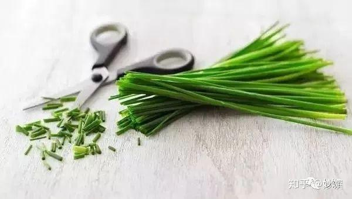
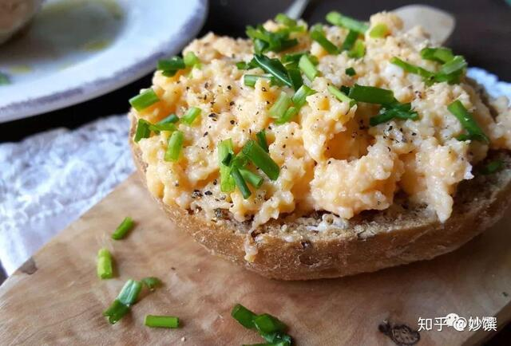

葱家真是够乱的，大葱小葱香葱韭葱，还有叫小香葱的，这不是找事嘛！手指不沾阳春水的人懵圈是必然的。
那这位又是哪儿的一根葱呢？它和中国南方的小葱长得可真像，但调性又不同。
虾夷葱又叫细香葱，比南方的小葱更细，葱味没那么重，略带清香，并微微泛甜。气味易挥发，要避免加热，和西式炒蛋绝配。因为味道清淡，常用于西餐和日本料理中。

▲ 虾夷葱，图源自网络。
气味：味道柔和，略带清香。
coffee cat 的早餐：西式炒蛋配面包

▲ 只有我一个觉得蛋上撒葱很性感吗？
应用：撒在西式炒蛋和煎蛋上；拌在奶酱里；装饰浓汤。